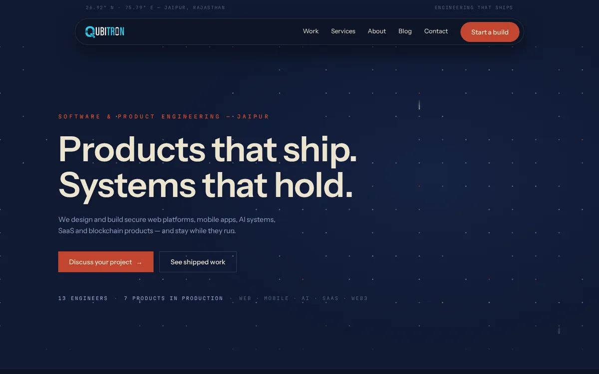

Qubitron Labs
Search-intent page themes for AI and software engineering services, with technical audits and search-friendly specs for developers.
B2B SEOTopical architectureAEO/GEO planning
Case study 01. AI software development and B2B technology services
Qubitron Labs: AI & Software Engineering
Engagement: Current employer portfolio.
SEO focus: product and service discoverability, clear solution positioning and organic opportunity mapping.
My work and relevant scope
- Group AI/software engineering, web/mobile development and related service offerings into search-intent-led page themes.
- Plan service-page metadata, headings, structured content and contextual internal links.
- Research informational and commercial queries that connect technology solutions with prospective business customers.
- Prioritize technical audits and search-friendly content specifications for development teams.
Skills demonstrated
B2B SEO, topical architecture, commercial keyword research, technical auditing, AEO/GEO page planning.